chapter: 4 可視化(1)：ggplot2によるグラフ作成
Rを使用することの大きなメリットの一つが多彩なグラフィック機能です。グラフなどを用いて、データを可視化することで自分の分析対象をより深く理解できるようになります。
4.1 可視化の重要性
はじめにサンプルデータを用いて、可視化の持つ意味について考えます。
# install.packages("datasets")
library(datasets)
print(anscombe)## x1 x2 x3 x4 y1 y2 y3 y4
## 1 10 10 10 8 8.04 9.14 7.46 6.58
## 2 8 8 8 8 6.95 8.14 6.77 5.76
## 3 13 13 13 8 7.58 8.74 12.74 7.71
## 4 9 9 9 8 8.81 8.77 7.11 8.84
## 5 11 11 11 8 8.33 9.26 7.81 8.47
## 6 14 14 14 8 9.96 8.10 8.84 7.04
## 7 6 6 6 8 7.24 6.13 6.08 5.25
## 8 4 4 4 19 4.26 3.10 5.39 12.50
## 9 12 12 12 8 10.84 9.13 8.15 5.56
## 10 7 7 7 8 4.82 7.26 6.42 7.91
## 11 5 5 5 8 5.68 4.74 5.73 6.89このデータ例は、統計学者のフランク・アンスコムが1973年に紹介した例です。この例では、\(x\) の平均(=mean)は\(9\)、\(x\) の標準偏差(=sd)は\(3.32\)、\(y\)の平均が\(7.50\) (小数第2位まで一致)、\(y\)の標準偏差が \(2.03\) (小数第3位まで一致)、と等しくなっています。
# 記述統計を出力するためのpackage
# include.packages("psych)
library(psych)
descriptive_statistics<-describe(anscombe,skew = FALSE, ranges = FALSE)
print(descriptive_statistics)## vars n mean sd se
## x1 1 11 9.0 3.32 1.00
## x2 2 11 9.0 3.32 1.00
## x3 3 11 9.0 3.32 1.00
## x4 4 11 9.0 3.32 1.00
## y1 5 11 7.5 2.03 0.61
## y2 6 11 7.5 2.03 0.61
## y3 7 11 7.5 2.03 0.61
## y4 8 11 7.5 2.03 0.61また、\(x_i\)と\(y_i\)の間の相関係数も少数第３位で四捨五入して\(0.82\)と一致しています。
\[ r = \frac{\frac{1}{n}\sum_{i=1}^{n}(x_{i}-\overline{x})(y_{i}-\overline{y})}{\sqrt{\frac{1}{n}\sum_{i=1}^{n}(x_{i}-\overline{x})^{2}}\sqrt{\frac{1}{n}\sum_{i=1}^{n}(y_{i}-\overline{y})^{2}}} = \frac{s_{xy}}{s_{x}s_{y}} \]
#x1とy1の相関係数
x1y1<-cor(anscombe$x1,anscombe$y1)
x2y2<-cor(anscombe$x2,anscombe$y2)
x3y3<-cor(anscombe$x3,anscombe$y3)
x4y4<-cor(anscombe$x4,anscombe$y4)
options(digits=2) # 表示桁数を小数点第２位までに変える
print(c(x1y1,x2y2,x3y3,x4y4))## [1] 0.82 0.82 0.82 0.82ところが、このデータをプロットしてみると以下のようになります (描画に用いたggplot2の解説はこの後に行います)。
# 4組のグラフを作成する
plotx1y1<-ggplot(anscombe)+geom_point(aes(x=x1,y=y1),size=3)+
xlim(2.5,20)+ylim(2.5,12.9)+ggtitle("Set 1")
plotx2y2<-ggplot(anscombe)+geom_point(aes(x=x2,y=y2),size=3)+
xlim(2.5,20)+ylim(2.5,12.9)+ggtitle("Set 2")
plotx3y3<-ggplot(anscombe)+geom_point(aes(x=x3,y=y3),size=3)+
xlim(2.5,20)+ylim(2.5,12.9)+ggtitle("Set 3")
plotx4y4<-ggplot(anscombe)+geom_point(aes(x=x4,y=y4),size=3)+
xlim(2.5,20)+ylim(2.5,12.9)+ggtitle("Set 4")
# このpackageでグラフを組み合わせる
#install.packages("patchwork")
library(patchwork)
plotx1y1 + plotx2y2 +plotx3y3+plotx4y4+
plot_layout(ncol = 2, heights = c(5, 4))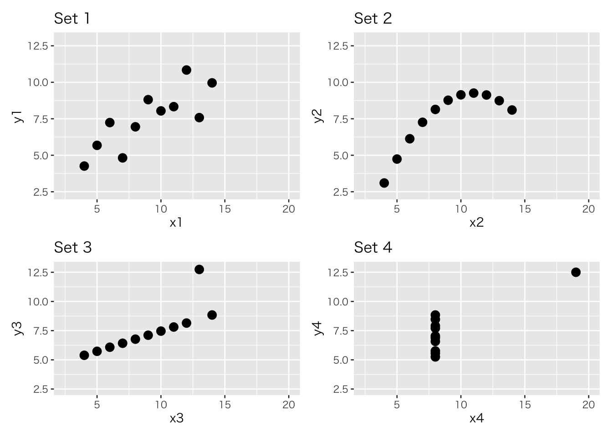
このように全く異なるデータの分布をしていることがわかります。要約統計量だけをみて判断せずに常にグラフにデータをプロットしてみることが重要です。
4.2 Rによる可視化のデモ
コマンドラインで図を作成することははじめは面倒に思うかもしれません。しかし、どのようなグラフを作成するかを一つ一つ命令に書きますので、一度作成してしまえばコピーペーストで簡単に複製することができます。ところがクリックベースでグラフを作成した場合、完成したグラフをコピーしたとしても必ずしも元のグラフと同じにはなりません。ズレた場合にも目測で直す必要があります。
Rによる可視化の例を公式デモにて確認します。
demo(graphics)##
##
## demo(graphics)
## ---- ~~~~~~~~
##
## > # Copyright (C) 1997-2009 The R Core Team
## >
## > require(datasets)
##
## > require(grDevices); require(graphics)
##
## > ## Here is some code which illustrates some of the differences between
## > ## R and S graphics capabilities. Note that colors are generally specified
## > ## by a character string name (taken from the X11 rgb.txt file) and that line
## > ## textures are given similarly. The parameter "bg" sets the background
## > ## parameter for the plot and there is also an "fg" parameter which sets
## > ## the foreground color.
## >
## >
## > x <- stats::rnorm(50)
##
## > opar <- par(bg = "white")
##
## > plot(x, ann = FALSE, type = "n")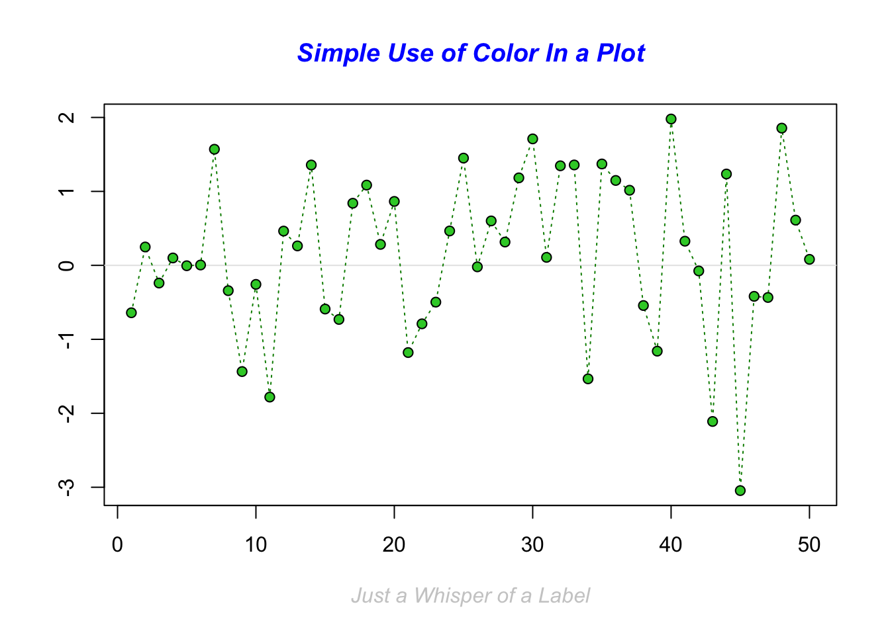
##
## > abline(h = 0, col = gray(.90))
##
## > lines(x, col = "green4", lty = "dotted")
##
## > points(x, bg = "limegreen", pch = 21)
##
## > title(main = "Simple Use of Color In a Plot",
## + xlab = "Just a Whisper of a Label",
## + col.main = "blue", col.lab = gray(.8),
## + cex.main = 1.2, cex.lab = 1.0, font.main = 4, font.lab = 3)
##
## > ## A little color wheel. This code just plots equally spaced hues in
## > ## a pie chart. If you have a cheap SVGA monitor (like me) you will
## > ## probably find that numerically equispaced does not mean visually
## > ## equispaced. On my display at home, these colors tend to cluster at
## > ## the RGB primaries. On the other hand on the SGI Indy at work the
## > ## effect is near perfect.
## >
## > par(bg = "gray")
##
## > pie(rep(1,24), col = rainbow(24), radius = 0.9)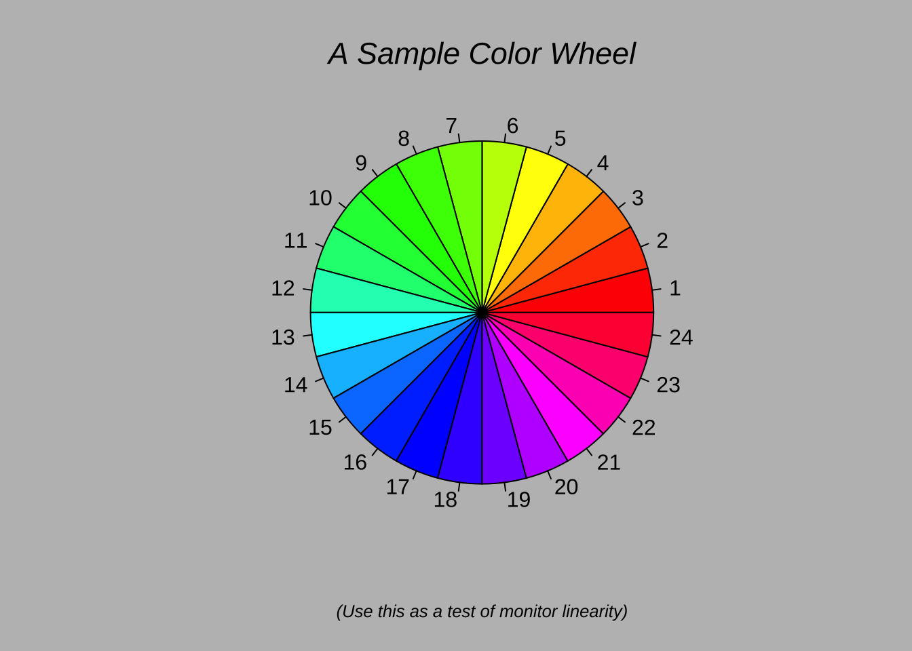
##
## > title(main = "A Sample Color Wheel", cex.main = 1.4, font.main = 3)
##
## > title(xlab = "(Use this as a test of monitor linearity)",
## + cex.lab = 0.8, font.lab = 3)
##
## > ## We have already confessed to having these. This is just showing off X11
## > ## color names (and the example (from the postscript manual) is pretty "cute".
## >
## > pie.sales <- c(0.12, 0.3, 0.26, 0.16, 0.04, 0.12)
##
## > names(pie.sales) <- c("Blueberry", "Cherry",
## + "Apple", "Boston Cream", "Other", "Vanilla Cream")
##
## > pie(pie.sales,
## + col = c("purple","violetred1","green3","cornsilk","cyan","white"))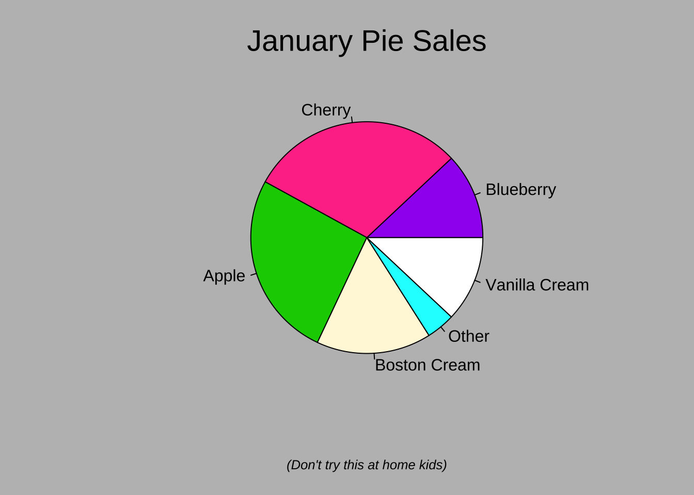
##
## > title(main = "January Pie Sales", cex.main = 1.8, font.main = 1)
##
## > title(xlab = "(Don't try this at home kids)", cex.lab = 0.8, font.lab = 3)
##
## > ## Boxplots: I couldn't resist the capability for filling the "box".
## > ## The use of color seems like a useful addition, it focuses attention
## > ## on the central bulk of the data.
## >
## > par(bg="cornsilk")
##
## > n <- 10
##
## > g <- gl(n, 100, n*100)
##
## > x <- rnorm(n*100) + sqrt(as.numeric(g))
##
## > boxplot(split(x,g), col="lavender", notch=TRUE)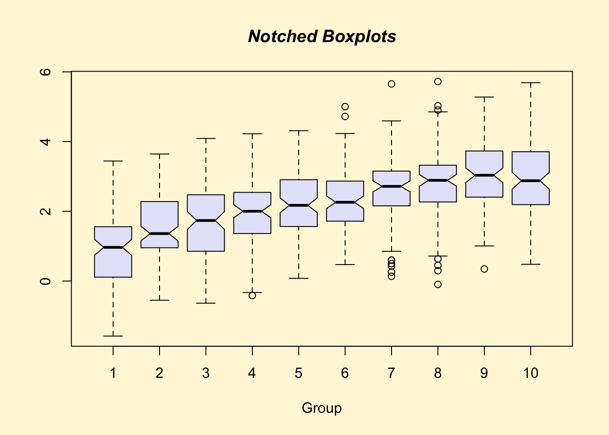
##
## > title(main="Notched Boxplots", xlab="Group", font.main=4, font.lab=1)
##
## > ## An example showing how to fill between curves.
## >
## > par(bg="white")
##
## > n <- 100
##
## > x <- c(0,cumsum(rnorm(n)))
##
## > y <- c(0,cumsum(rnorm(n)))
##
## > xx <- c(0:n, n:0)
##
## > yy <- c(x, rev(y))
##
## > plot(xx, yy, type="n", xlab="Time", ylab="Distance")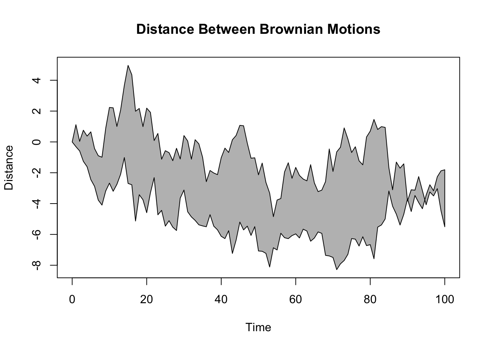
##
## > polygon(xx, yy, col="gray")
##
## > title("Distance Between Brownian Motions")
##
## > ## Colored plot margins, axis labels and titles. You do need to be
## > ## careful with these kinds of effects. It's easy to go completely
## > ## over the top and you can end up with your lunch all over the keyboard.
## > ## On the other hand, my market research clients love it.
## >
## > x <- c(0.00, 0.40, 0.86, 0.85, 0.69, 0.48, 0.54, 1.09, 1.11, 1.73, 2.05, 2.02)
##
## > par(bg="lightgray")
##
## > plot(x, type="n", axes=FALSE, ann=FALSE)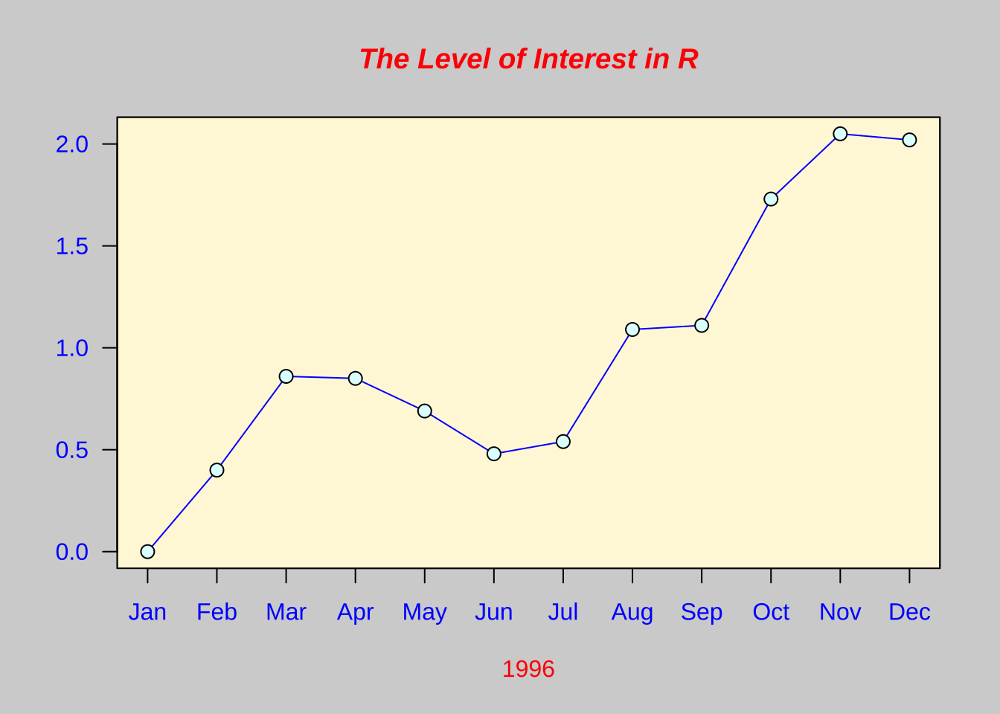
##
## > usr <- par("usr")
##
## > rect(usr[1], usr[3], usr[2], usr[4], col="cornsilk", border="black")
##
## > lines(x, col="blue")
##
## > points(x, pch=21, bg="lightcyan", cex=1.25)
##
## > axis(2, col.axis="blue", las=1)
##
## > axis(1, at=1:12, lab=month.abb, col.axis="blue")
##
## > box()
##
## > title(main= "The Level of Interest in R", font.main=4, col.main="red")
##
## > title(xlab= "1996", col.lab="red")
##
## > ## A filled histogram, showing how to change the font used for the
## > ## main title without changing the other annotation.
## >
## > par(bg="cornsilk")
##
## > x <- rnorm(1000)
##
## > hist(x, xlim=range(-4, 4, x), col="lavender", main="")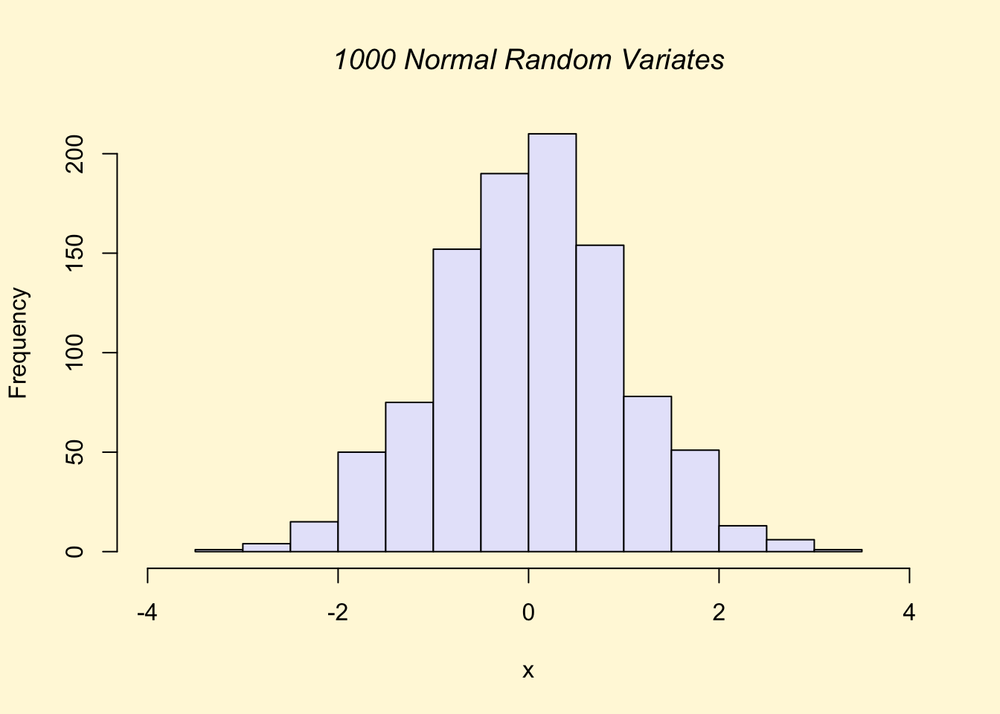
##
## > title(main="1000 Normal Random Variates", font.main=3)
##
## > ## A scatterplot matrix
## > ## The good old Iris data (yet again)
## >
## > pairs(iris[1:4], main="Edgar Anderson's Iris Data", font.main=4, pch=19)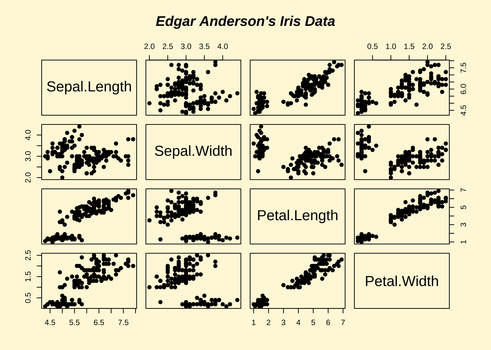
##
## > pairs(iris[1:4], main="Edgar Anderson's Iris Data", pch=21,
## + bg = c("red", "green3", "blue")[unclass(iris$Species)])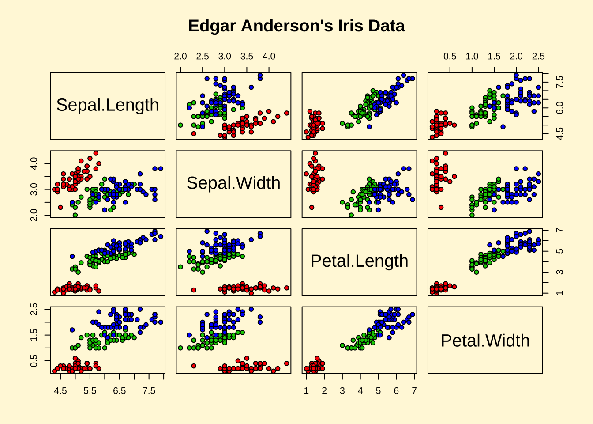
##
## > ## Contour plotting
## > ## This produces a topographic map of one of Auckland's many volcanic "peaks".
## >
## > x <- 10*1:nrow(volcano)
##
## > y <- 10*1:ncol(volcano)
##
## > lev <- pretty(range(volcano), 10)
##
## > par(bg = "lightcyan")
##
## > pin <- par("pin")
##
## > xdelta <- diff(range(x))
##
## > ydelta <- diff(range(y))
##
## > xscale <- pin[1]/xdelta
##
## > yscale <- pin[2]/ydelta
##
## > scale <- min(xscale, yscale)
##
## > xadd <- 0.5*(pin[1]/scale - xdelta)
##
## > yadd <- 0.5*(pin[2]/scale - ydelta)
##
## > plot(numeric(0), numeric(0),
## + xlim = range(x)+c(-1,1)*xadd, ylim = range(y)+c(-1,1)*yadd,
## + type = "n", ann = FALSE)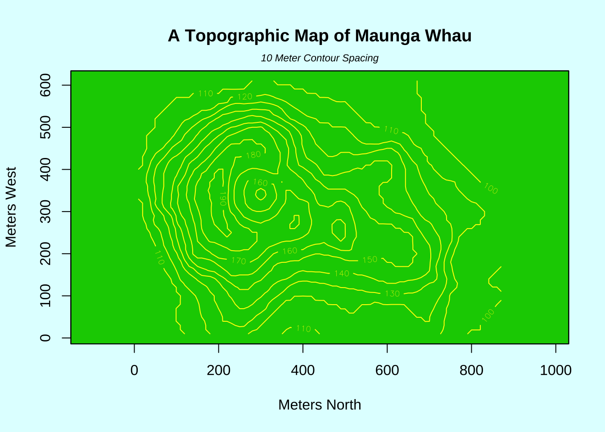
##
## > usr <- par("usr")
##
## > rect(usr[1], usr[3], usr[2], usr[4], col="green3")
##
## > contour(x, y, volcano, levels = lev, col="yellow", lty="solid", add=TRUE)
##
## > box()
##
## > title("A Topographic Map of Maunga Whau", font= 4)
##
## > title(xlab = "Meters North", ylab = "Meters West", font= 3)
##
## > mtext("10 Meter Contour Spacing", side=3, line=0.35, outer=FALSE,
## + at = mean(par("usr")[1:2]), cex=0.7, font=3)
##
## > ## Conditioning plots
## >
## > par(bg="cornsilk")
##
## > coplot(lat ~ long | depth, data = quakes, pch = 21, bg = "green3")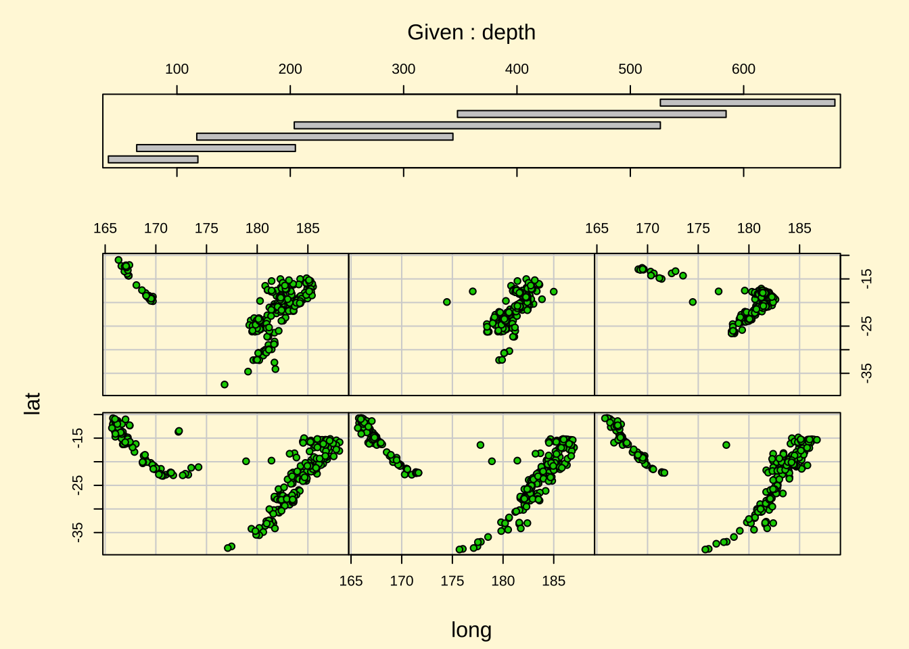
##
## > par(opar)4.3 ggplot2の考え方
ggplot2は、Rの中で最もポピュラーな描画packageです。最初は戸惑うかもしれませんが、論理でグラフを作る面白さを一緒に体験しましょう。
ggplot2はグラフを特定のパーツに分けてレイヤーとして作成し、それらを重ねて表現していきます。コマンドとしてはそれぞれのレイヤーを「足し算する」形でグラフを完成していきます。
下の例は最初のコマンドで、ggplot(A,aes(x=B,y=C))で、Aというデータセットを使って、x軸にB、y軸にCを使うグラフの基礎となるレイヤーを作ってね、という命令になります。
# install.packages("ggplot2")
library(ggplot2)
# midewestはgplot2に付属しているデータベースで、アメリカ中西部の
# ５つの州(IL, IN, MI, OH,WI)のサンプルデータが保存してあります。
ggplot(data=midwest, aes(x=percollege,y=percadultpoverty))結果は上記のようになります。この例では、横軸が各カウンティの大卒割合、縦軸が、貧困割合を示しています。
データそのものは、どうやってプロットするか、を命令しないと描かれません。どうやってとは、棒グラフにするのか、折れ線グラフにするのか、円グラフにするのか、といった見た目の問題です。このどうやっての部分は、geom_XXX()という関数群で指定します。例えば、散布図を作成する場合は、geom_point()となります。
ggplot(data=midwest)+
geom_point(aes(x=percollege,y=percadultpoverty))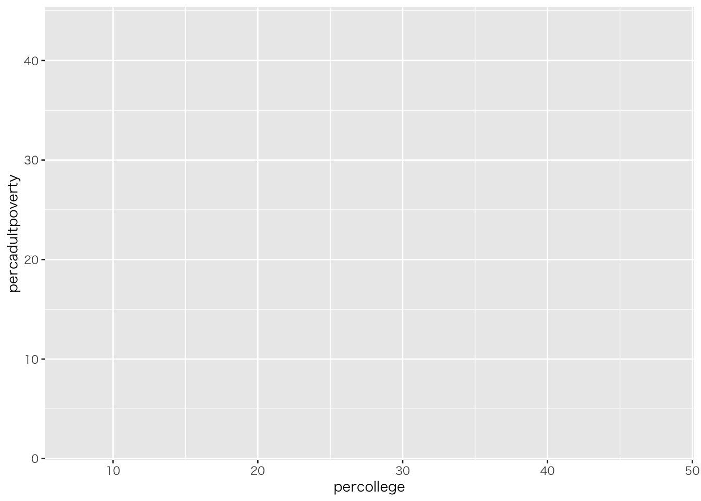
代表的なgeom_XXX関数は以下の通りです。
| 関数名 | 内容 |
|---|---|
geom_point |
散布図のように点を描画 |
geom_line |
折れ線グラフを描画 |
geom_smooth |
データのトレンド線を描画 |
geom_col |
棒グラフの描画 |
geom_polygon |
長方形など任意の形状のオブジェクトの描画 |
geom_sf |
空間情報を持つオブジェクトの描画 |